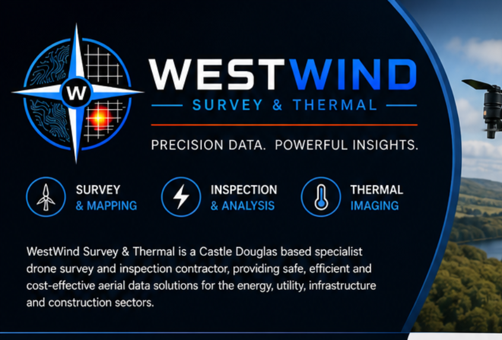
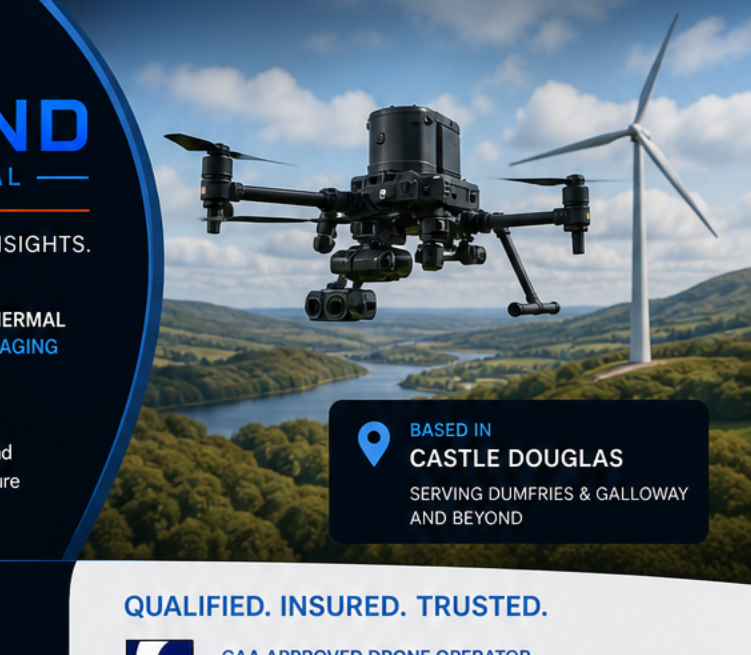
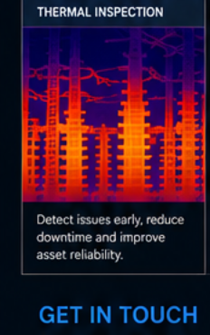
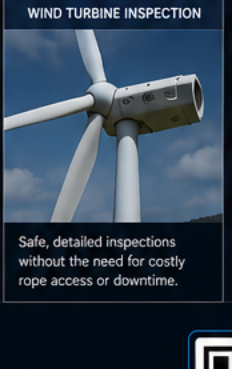
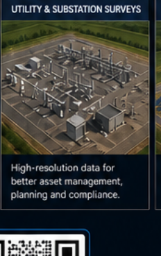
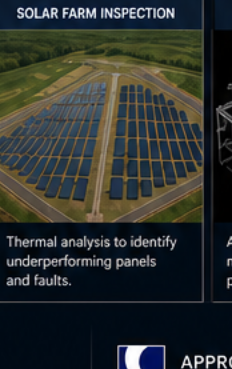
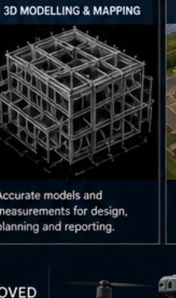
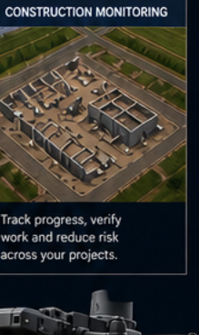

DRONE THERMAL IMAGING
Identify hotspots, electrical faults and thermal anomalies.

SURVEY
& MAPPING
INSPECTION
& ANALYSIS
THERMAL
IMAGING
WestWind Survey & Thermal is a Castle Douglas based specialist drone survey and inspection contractor, providing safe, efficient and cost-effective aerial data solutions for the energy, utility, infrastructure and construction sectors across the UK.

BASED IN
We help businesses, contractors, landowners and public sector organisations make better decisions with accurate data, detailed analysis and fast turnaround.
Identify hotspots, electrical faults and thermal anomalies.
Condition surveys, defect finding and maintenance inspections.
Blade, nacelle and tower inspections with high resolution imagery.
High accuracy mapping for planning, engineering and compliance.
Overhead lines, substations, telecoms and infrastructure surveys.
Photogrammetry models, measurements and digital twins.
Thermal and visual inspections to identify underperforming assets.
Progress monitoring and rapid post-storm response.
Fully compliant with Civil Aviation Authority regulations and operational requirements.
Full cover in place for your peace of mind.
Comprehensive health, safety and operational procedures for every project.
Your data is handled securely and delivered confidentially.

Detect issues early, reduce downtime and improve asset reliability.

Safe, detailed inspections without costly rope access or downtime.

High-resolution data for better asset management and compliance.

Thermal analysis to identify underperforming panels and faults.

Accurate models and measurements for design, planning and reporting.

Track progress, verify work and reduce risk across your projects.
☎ 07720 323509
✉ info@westwindsurvey.co.uk
◎ westwindsurvey.co.uk
⌖ Castle Douglas, Dumfries & Galloway — operating UK-wide
Enterprise drone platform with thermal, wide, zoom and laser ranging capabilities.